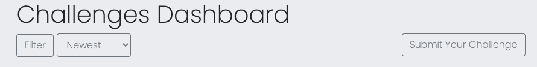
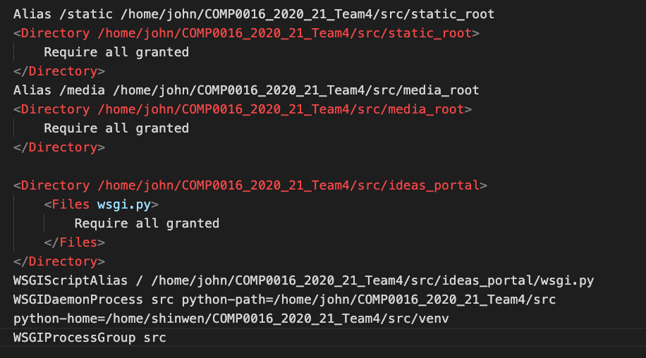

User Manual
link to our site : https://idea-4-u.ga/There are three types of users for this platform: Administrators, Moderators and Users. Below are the sample accounts for each type of user.
Administrator:
Moderator:
Regular user:
Introduction
Before we start on the main content, I would like to bring your attention to the header and the footer. The header consists of “Home”, ”Ideas”, “Challenges”, “Leaderboard”, “Profile”, “Login”, “Sign Up”. To clarify, the Ideas tab brings users to the ideas dashboard and the challenges tab brings users to the challenges dashboard. The footer will consist a tab called “Community Guidelines”. In short, it is a page that will list all the DOs and DON’Ts of the website. All future social media contacts will also be included in the footer.
Firstly, let’s start with the homepage. This is the page that any user will see when they access the website. Under this page, there will be a brief guide prompting the user to post an idea of their own (on your left) or view existing challenges. (on your right) If the user is not logged in, the “Submit an Idea” button will lead the user to the login page. Otherwise, it will lead the user to an idea creation form. The “View Challenges”button will bring users to the challenge dashboard which can also be accessed with the “Challenges”tab at the header.
Ideas
Moving on to the Idea Dashboard, we will see a list of ideas shown. On your top-left, you will see two buttons called “Filter” and “Sort”.
The filter button will prompt up a list of tags for the user to tick and apply the filter.
The sort button on the other hand will provide a drop down allowing the user to sort ideas based on “Popularity” or “Newest”. To clarify, popularity is based on the number of votes an idea gets.
If the user is logged in, the page will appear a “Submit an Idea” button on the top right.
Click that and it will bring you to an idea creation form.
Back to the Ideas Dashboard, looking at the idea object, if the user click on either the idea title or the thumbnail, it will bring them to the individual idea page as shown below. On the idea page, it will display the title of the idea, the tags given to the idea, the author of the idea, the date the idea was published and the comment count. If the user is logged in, he or she will be able to vote or unvote on the idea. Comments can also be done at the comment section below.
If you are the author of this idea, you will be able to edit and delete this idea.
For moderators, if this idea falls under your challenge, you can approve or unapprove this idea and also review the idea.
By clicking the “review” button as shown above, it will bring you to an idea review form in which you will be able to look at the idea and score it based on criterias.
To share this review form to an external reviewer, you can copy a shareable link.
Challenges
At the Challenge Dashboard, you will see a list of challenges posted. On your top-left, you will see the two buttons called “Filter” and “Sort”.
If you are a moderator, there will be a “Submit a Challenge” button on your right.
That button will bring you to an challenge submission form.
When clicked into a single challenge, the user will be able to subscribe to the challenge if they are logged in.
If the user is the moderator of the idea, they will be able to edit and delete the challenge.
For users who want to submit an idea to this challenge, they can do so at the “Judging Criteria” section. If the challenge has not ended, there will be a button to submit an idea.
If the challenge has ended, it will show a message instead.
The “Submitted Ideas” section shows all the ideas that are approved by the moderator.
Profile
Click the “Profile” button on the header bring you to your own profile. To edit your profile, click the “Edit Profile” button.
For regular users, their profile will show tabs of “Ideas”, “Subscribed”, “Notifications” and “Idea Drafts”.
For moderators, their profile will show additional tabs such as “Challenges”, “Challenge Draft” and “Approve List”.
Leaderboard
The leaderboard shows a list of top 10 users with the highest score. In order to gain points, you need to submit an idea, vote for ideas, get voted for your own ideas, comment on ideas and get commented for your own idea. To visit the profile of that user. Please click into the you can click the name of that user.
Administrator
Administrators can assign users to be moderators inside the page of each user as shown below:
To approve a single idea, which is a right exclusive to the administrator, they can do so by edit that individual idea as shown below,
To edit community guidelines,
Deployment Guide
source: https://youtu.be/Sa_kQheCnds
Our portal is currently hosted with a Linode Server. The instructions below will show the steps needed to deploy it on Linode specifically.
At the homepage of the server, there will be a ssh access command presented. Copy that and paste it in your terminal. In our case, it is the line below:
ssh root@139.162.234.241
Hostname
Once accessed, check for any new updates and change the host name to “django-server”.
apt-get update && apt-get upgradehostnamectl set-hostname django-server
Add hostname to the list of hosts
Nano /etc/hosts Insert your ip address and your host name (django-server) below the already-available localhost.
Create a limit user
For example purposes, we will create a user called John.
adduser john
Enter your desired password for this user. Fill in the information. This step is optional. Press enter to skip.
Add this user to group sudo
adduser john sudo
Now we can access the server with our newly created sudo user.
ssh john@139.162.234.241
Install Uncomplicated Firewall
Installation
sudo apt-get install ufw
Allow all outgoing access and deny all incoming access
sudo ufw default allow outgoing
sudo ufw default deny incoming
Allow SSH and HTTP
sudo ufw allow ssh
Refresh and check status.
sudo ufw enable
sudo ufw status
Clone project folder from github
At the root directory of our server, copy the link from github and clone.
git clone https://github.com/UCLComputerScience/COMP0016_2020_21_Team4.git
Create Virtual Environment in Server
Installation.
sudo apt-get install python3-pip
sudo apt-get install python3-venv
Create a virtual environment and let’s call it “venv”. Let's place it under our django project, for our case, 'COMP0016_2020_21_Team4/src'
python3 -m venv src/venv
Activate the virtual environment (you must be in the directory where the “venv” file is placed)
source venv/bin/activate
Install all the packages listed in the 'requirements.txt'. This file is placed under src/
pip3 install -r requirements.txt
Be sure to check that 'src/ideas_portal/settings.py' contains our IP address under ALLOWED_HOST.
Setup Apache web server
Installation
sudo apt-get install apache2
sudo apt-get install libapache2-mod-wsgi-py3
To configure our apache web server, we need to make a copy of the default configuration file and make changes to that. Let’s call our new configuration file “django-project.conf”
cd /etc/apache2/sites-available/
sudo cp 000-default.conf django-project.conf
Edit the newly created conf file “django-project.conf”
sudo nano django-project.conf
Add the following lines to configuration file. This is to map the ‘static’ folder with our django’s static folder and map the “media” folder with our django’s media files. (make sure to save when you exit)
Enable our site through apache and disable the default configuratio file.
sudo a2ensite django-project
sudo a2dissite 000-default.conf
Giving Apache access
Making apache the group owner of the “db.sqlite3” file
sudo chown :www-data src/db.sqlite3
sudo chmod 664 src/db.sqlite3
Make apache the group owner of the parent directory. We set read and write permissions to the group.
sudo chown :www-data src/
sudo chmod 775 src/
Give apache access to the media files
sudo chown -R :www-data src/media-root
sudo chmod 775 src/media-root
Placing sensitive information into a config file. Create config file and let’s call it “config.json”
sudo touch /etc/config.json
Include the following information “SECRET_KEY”, “EMAIL_USER”, “EMAIL_PASS”, “UCL_CLIENT_SECRET”
Allow HTTP access
sudo ufw allow http/tcp
Restart apache server
sudo service apache2 restart
To read error messages
sudo nano /var/log/apache2/error.log
Setting up Redis and Celery
source 1: https://www.google.com/amp/s/www.digitalocean.com/community/tutorials/how-to-install-and-secure-redis-on-ubuntu-20-04.amp
source 2: https://realpython.com/asynchronous-tasks-with-django-and-celery/
Celery is an asynchronous task queue that is used to run scheduled tasks in our project when dealing with changing the state of a challenge. Redis is an in-memory key-value store that is used as a message broker between the django project and the celery workers.
Installing Redis
sudo apt install redis-server
Open the redis configuration file to make changes
sudo nano /etc/redis/redis.conf
Find the supervised directive. change it from no to systemd since you are running Ubuntu, which uses the systemd init system.
Restart the Redis service to reflect the changes you made to the configuration file:
sudo systemctl restart redis.service
Start by checking that the Redis service is running:
sudo systemctl status redis
If redis is running, it will show the following status
Connect to the server and test connectivity. It will return “PONG” if successful.
redis-cli
ping
To exit server:
exit
Binding to local host to increase security. Open the configuration file:
sudo nano /etc/redis/redis.conf
Locate this line “bind 127.0.0.1 ::1” and make sure it is uncommented
Restart the Redis service to register changes:
sudo systemctl restart redis
Install handy networking tools
sudo apt install net-tools
Check if configuration changes to redis has taken effect
sudo netstat -lnp | grep redis
After setting up redis, install supervisor needed for celery:
sudo netstat -lnp | grep redis
Check if configuration changes to redis has taken effec
sudo apt-get install supervisor
In the github repository, there is a directory “supervisor” which contains “ideas_portal_celery” and “ideas_portal_beatcelery”. Copy these files to the remote server in the “/etc/supervisor/conf.d/” directory.
Create the log files:
touch /var/log/celery/ideas_portal_worker.log
touch /var/log/celery/ideas_portal_beat.log
Run the following commands to make Supervisor aware of the programs
sudo supervisorctl reread
sudo supervisorctl update
Run the following commands to stop, start, and/or check the status of a program. Replace "program_name" with ideas_portal_celery and ideas_portal_beatcelery.
sudo supervisorctl stop "program_name"
sudo supervisorctl start "program_name"
sudo supervisorctl status "program_name"
Enabling encrypted HTTPS
source: https://www.digitalocean.com/community/tutorials/how-to-secure-apache-with-let-s-encrypt-on-ubuntu-20-04
Prerequisite is to have a fully registered domain name.
Installing certbot
sudo apt install certbot python3-certbot-apache
Checking your Apache Virtual Host Configuration
sudo nano /etc/apache2/sites-available/your_domain.conf
Find the existing ServerName and ServerAlias lines.Make changes to match your domain name.
Validate your changes
sudo apache2ctl configtest
Once your configuration file’s syntax is correct, reload Apache so that the
changes take effect:
sudo systemctl reload apache2
Allowing HTTPS Through the Firewall. Check your status
sudo ufw status
To additionally let in HTTPS traffic, allow the “Apache Full” profile and delete the redundant “Apache” profile:
sudo ufw allow 'Apache Full'
sudo ufw delete allow 'Apache'
Obtaining an SSL Certificate. The Apache plugin will take care of reconfiguring Apache and reloading the configuration whenever necessary
sudo certbot --apache
It will ask you for a valid e-mail address
Confirm if you agree to Let’s Encrypt terms of service
You’ll be asked if you would like to share your email with the Electronic Frontier Foundation to receive news and other information.
Decide which domains you’d like to activate HTTPS for. If you’d like to enable HTTPS for all listed domain names (recommended), you can leave the prompt blank and hit ENTER to proceed
Legal Issues
The software is an early proof of concept for development purposes and should not be used as-is in a live environment without further redevelopment and/or testing. No warranty is given and no real data or personally identifiable data should be stored. Usage and its liabilities are your own.
These are all libraries and Technologies used in our portal.
| Name | Version | License |
|---|---|---|
| Django | 3.1.3 | BSD License |
| Pillow | 8.0.1 | Historical Permission Notice and Disclaimer (HPND) |
| PyJWT | 2.0.0 | MIT License |
| amqp | 5.0.5 | BSD License |
| asgiref | 3.3.1 | BSD License |
| billiard | 3.6.3.0 | BSD License |
| celery | 5.0.5 | BSD License |
| certifi | 2020.12.5 | Mozilla Public License 2.0 (MPL 2.0) |
| cffi | 1.14.4 | MIT License |
| chardet | 4.0.0 | GNU Library or Lesser General Public License (LGPL) |
| click | 7.1.2 | BSD License |
| click-didyoumean | 0.0.3 | BSD License |
| click-plugins | 1.1.1 | BSD License |
| click-repl | 0.1.6 | MIT |
| coverage | 5.5 | Apache Software License |
| cryptography | 3.3.1 | Apache Software License, BSD License |
| decorator | 4.4.2 | BSD License |
| defusedxml | 0.6.0 | Python Software Foundation License |
| django-allauth | 0.44.0 | MIT License |
| django-autoslug | 1.9.8 | GNU Library or Lesser General Public License (LGPL) |
| django-cas-ng | 4.1.1 | MIT License |
| django-crispy-forms | 1.10.0 | MIT License |
| django-environ | 0.4.5 | MIT License |
| django-model-utils | 4.1.1 | BSD License |
| django-notifications-hq | 1.6.0 | BSD License |
| django-redis | 4.12.1 | BSD License |
| django-tinymce | 3.2.0 | MIT License |
| djangorestframework | 3.12.2 | BSD License |
| idna | 2.10 | BSD License |
| imageio | 2.9.0 | BSD License |
| itsdangerous | 1.1.0 | BSD License |
| jsonfield | 3.1.0 | MIT |
| kombu | 5.0.2 | BSD License |
| lxml | 4.6.2 | BSD License |
| oauthlib | 3.1.0 | BSD License |
| prompt-toolkit | 3.0.10 | BSD License |
| pycparser | 2.20 | BSD License |
| python-cas | 1.5.0 | MIT License |
| python3-openid | 3.2.0 | Apache Software License |
| pytz | 2020.4 | MIT License |
| redis | 3.5.3 | MIT License |
| requests | 2.25.1 | Apache Software License |
| requests-oauthlib | 1.3.0 | BSD License |
| sqlparse | 0.4.1 | BSD License |
| swapper | 1.1.2.post1 | MIT License |
| urllib3 | 1.26.2 | MIT License |
| vine | 5.0.0 | BSD License |
| wcwidth | 0.2.5 | MIT License |
| webservices | 0.7 | BSD License |
System developed by Shin Wen Yip, Jiaying Lin and James Ong.
Clients and organisations: UCL (University College London) and NHS (National Health Service).
Supervisors and Teaching Assistants: James Hardwick.